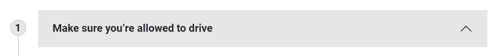
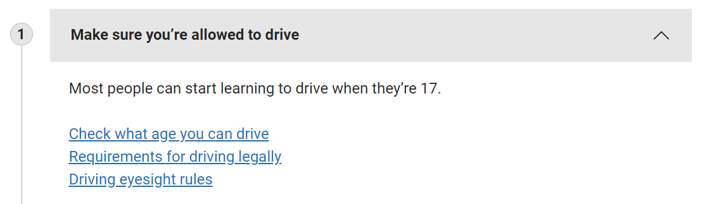

Step by step navigation
The step by step navigation pattern presents an end to end journey in logical steps that helps users complete each step.
When to use this pattern
gov.cy uses step by step navigation to represent end to end journeys:
- that have a specific start and end point
- that require the user to interact with several pieces of guidance or transactions on gov.cy
- where it’s helpful for the user to complete tasks in a specific order
When not to use this pattern
Do not use the step by step pattern:
- when most of the guidance or services that make up the journey are not on GOV.CY
- when the user only needs to read guidance and not take an action
- when there’s no logical or helpful order to complete the tasks - for example, when you’re mostly presenting the user with a series of options
- inside a transactional service
Warning
Do not use this patter inside a transactional service. Use the break the service into sections structure which uses the task list pattern instead
How it works
A step by step navigation journey can:
- bring together guidance and transactions from different departments, agencies, services and topics
- be completed in one go, or require the user to return to at different times
- link to content and services outside government
- include both online and offline actions
Step by step navigation information is displayed using a step by step accordion in the main section. The component uses JavaScript. To use it with the gov.cy developer assets, make sure to include the main JavaScript file in your page.
Step by step navigation is displayed in 2 ways.
- As a standalone page.
Example
Open in new tab
- On the right hand sidebar of content pages that are part of the step by step navigation.
Example
Open in new tab
Remember that step by step navigation is not for use within transactional services.
Content pages that are part of the step by step navigation should always have a link at the top that goes to the standalone step by step page.
Example
Open in new tab
You can find the code of the link to section below:
<div class="govcy-article-part-warning govcy-bg-light">
<p class="govcy-fw-bold govcy-mb-3">Part of</p>
<a href="#">Learn to drive a car: step by step</a>
</div>Elements of step by step navigation
Steps
A step is a task or group of tasks that a user can complete as part of the journey. They appear in the pattern as numbered sections. The user can click on the step to expand it.

Tasks
A task is an action you need to take or piece of content you need to read to help you complete a step. They appear as a single link or a list of links.
Different tasks can link to the same service or piece of content.
You can present tasks in bullet points if you need to show:
- different ways to perform the same task - for example, different versions of a form to download
- different conditions that change how the user should complete the task

Order steps according to user needs
Steps and tasks should be listed in the order users need to complete them.
If there is not a set order, they should be listed in an order that helps the user.
For example, ‘Agree a contract and salary’ is listed as step 4 in ‘Employ someone: step by step’ although it can be completed earlier.
Use both ‘and’ and ‘or’
Use ‘and’ to show when you can or must complete steps at the same time. You can use ‘and’ for more than 2 steps.
Use ‘or’ to show when there’s a choice between 2 steps, or when a task must be completed in a different way based the user’s circumstances or eligibility.
Example with and
Open in new tab
Example with or
Open in new tab
Costs
If there is a cost for completing a task, show it after the link text.
Text within a step
Only include text in the step if it gives:
- essential context that the user needs before they click on the link
- the conditions the user needs to meet to complete the task - for example, if only some users can do it
Accessibility
Be sure to follow the accessibility recommendations for the accordion component.